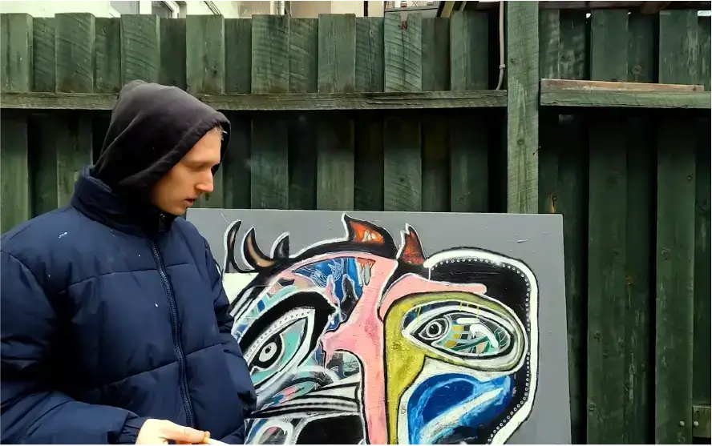
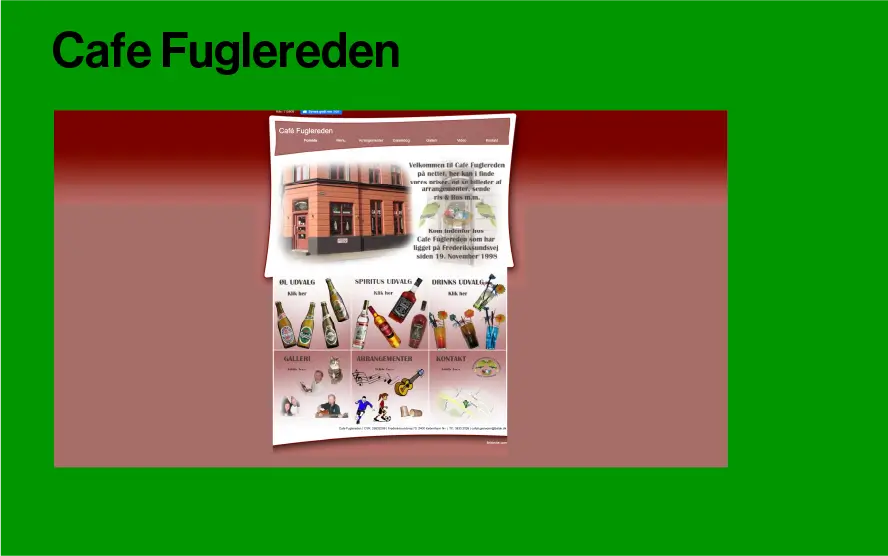
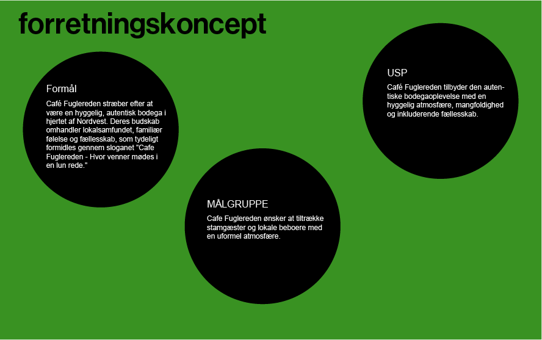
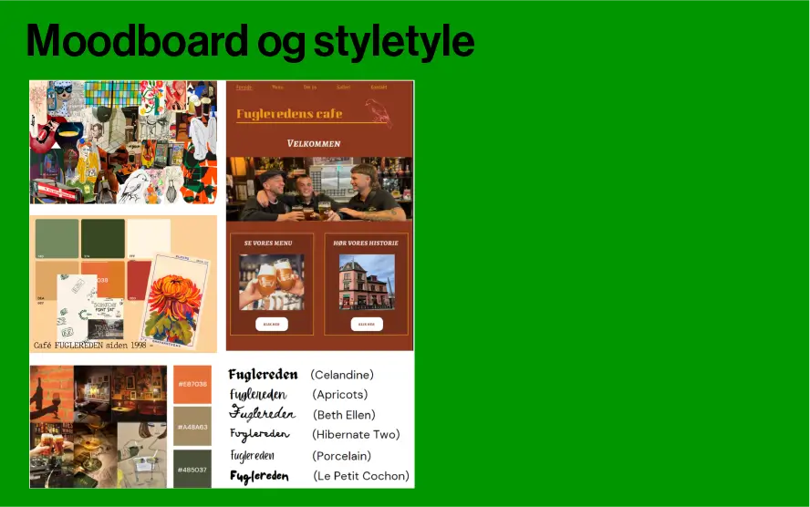
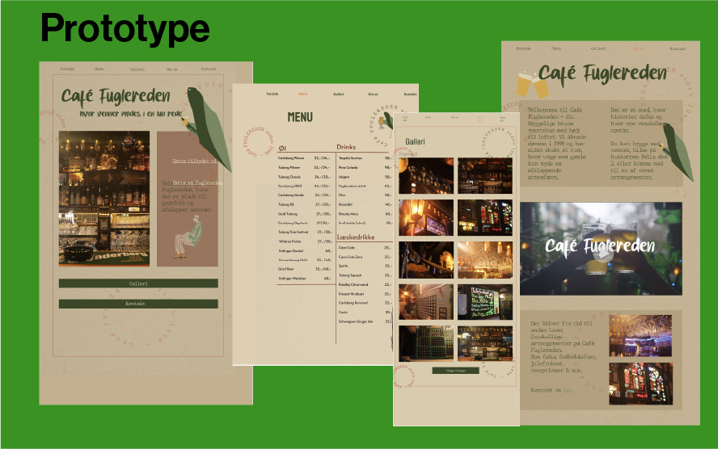
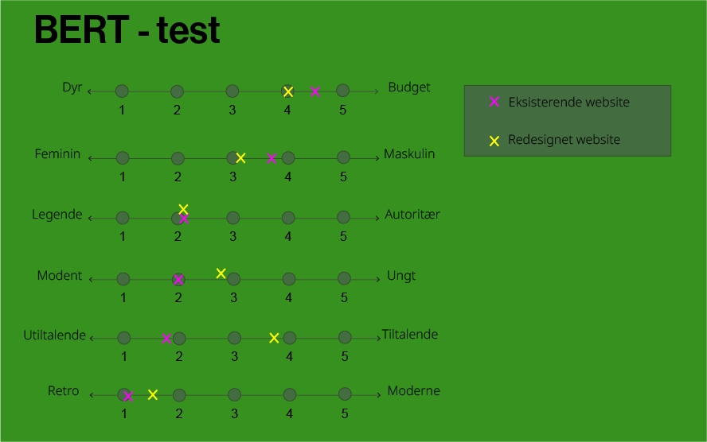
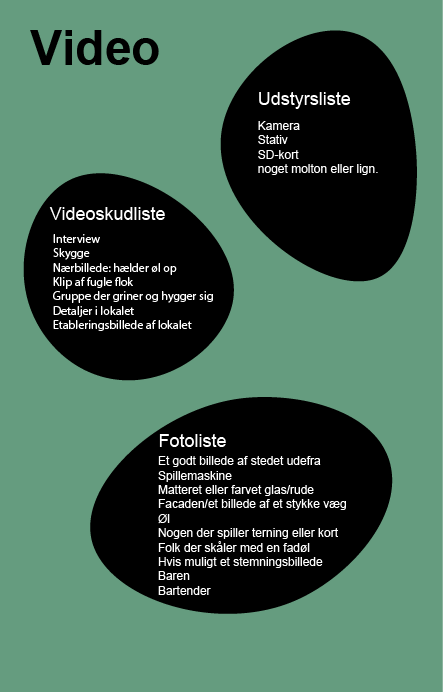
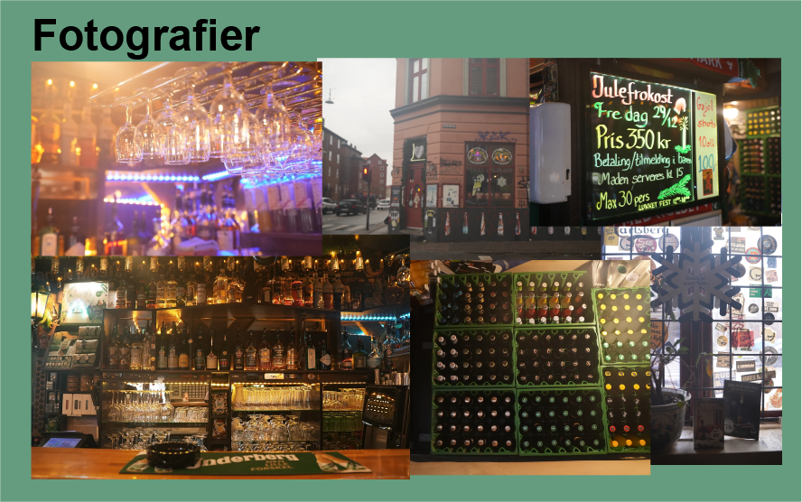

KIM HYE REE 김혜리
GRUNDLÆGGENDE INDHOLD
I dette tema skulle vi igennem to projekter. Under forløbet fik jeg indblik i grundlæggende videoproduktion, og hvordan jeg skulle navigere rundt i Adobe Premiere. Desuden formåede jeg at implementere teorier og metoder, som jeg tidligere havde tilegnet mig i andre projekter.
VIDEOSITE OPGAVE
I mit første projekt skulle jeg sammen med Laura lave et interview med en person med en passion. Sammen Vi valgte min gode ven og nabo Mikkel, hvis passion er kunst. Vi skulle sammen hjælpe hinanden med at filme og tilrettelægge filmdagen og individuelt skulle vi klippe filmen sammen.

VIRKSOMHEDSSITE
I dette projekt skulle jeg i samarbejde med Laura, Julie og Silje redesigne en virksomhed med eksisterende hjemmeside. Vi valgte Fuglereden som er brunt bodega i Nordvest, hvor deres virksomhed virkelig trængte til en kærlig hånd.

FORRETNINGSKONCEPT
Vi redesignede Café Fugleredens website for at give det et mere moderne udtryk og tiltrække en bredere målgruppe uden at miste den allerede eksisterende atmosfære og stemning.

MOODBOARD OG STYLETYLE
Vi lavede et fælles Pinterest board, hvor billeder af fugle, hjemmelavede tegninger, grønne og rødlige farver, og stemningsbilleder af bodegaer var gennemgående. Ud fra det valgte vi at gå med de tre værdiord; hyggeligt, uformelt og lokalt, som blev grundlag for vores færdige prototype.

PROTOTYPE
Vores mål med designet var at modernisere virksomhedens eksisterende hjemmeside, samtidig med at bevare den stemning og atmosfære virksomheden ønsker at udstråle over for sine gæster.

5 SECOND TEST
Sammenfattet observerede vi overordnet en positiv udvikling ud fra testresultaterne. Mens ingen brugere mente, at det nye design var utiltalende, mente 50% det om det originale design. Designet formår at bevare den sjove, uformelle og budgetvenlige atmosfære ifølge brugernes feedback. Dog er der ikke en lige så stor enighed om den retro følelse, selvom Café Fuglereden ønsker at bevare den klassiske bodega-atmosfære.
BERT- TEST
Vi så en positiv udvikling i ud fra vores test. Ingen brugere mente, at det nye design var utiltalende, mente 50% det om det originale design. Dog er der ikke en lige så stor enighed om den retro følelse, selvom Café Fuglereden ønsker at bevare den klassiske bodega-atmosfære.

SITEMAP
Vi lavede et sitemap for både det eksisterende website og vores redesignet version. Her kan man både visuelt og ud fra vores test vurdere at det eksisterende website var overskueligt og svært at navigere rundt. Med vores website har vi forbedret kundens brugerrejse. Vi har lavet færre undersider og placeret de vigtigste informationer på forsiden. Herudover har vi lavet en direkte beskedfunktion.
VIDEO
Mit ene gruppemedlem, Silje, som tidligere har erfaring indenfor video, lyd og fotografi, var hovedansvarlig for vores videointerview til websitet. Vi var alle fire med til optagelsesdagen på Cafe Fuglerede. Vi havde på forhånd udarbejdet nogle spørgsmål til interviewet. Dialogen mellem os og Cafe Fuglereden gik ikke helt som forventet, men jeg synes vi formåede at stå med et godt videointerview.


REFLEKSION
I dette tema var det første gang at vi havde gruppearbejde. For mig var det en god oplevelse og jeg synes at jeg sammen med gruppen havde en struktureret proces, god dialog og alt det sociale ved siden af uddannelsen. Når jeg reflekterer over min første opgave i tema 5, havde jeg en fornemmelse af at jeg fik lavet et sammenhængende interview, selvom jeg dog havde lidt svært ved Adobe Premiere.